Rammedige
Wallanlage
Wallanlage (Foto - 21.08.1990)


16 - Rammedige - Letztes Update 05.08.2025
| Navidaten: 56.49590 8.17777 oder: Bøvlingvej 93, 7620 Lemvig |
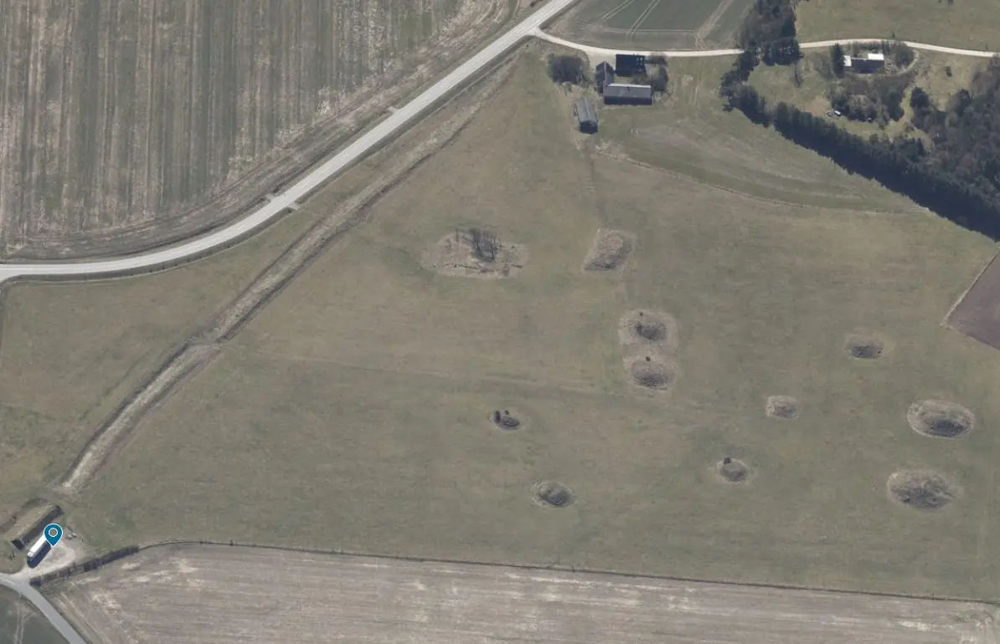
Dies ist ein Luftfoto vom 03.04.2023 von Skråfoto das Rammedige zeigt. Skråfoto ist eine Webanwendung, die von Klimadatastyrelsen weltweit kostenlos bereitgestellt wird - Freie Nutzung unter Beachtung der Lizenz: CC BY 4.0. Die Aufnahmen werden seit 2017 alle zwei Jahre erneuert und neben einer Senkrechtaufnahme wird ein Schrägbild aus jeder Himmelsrichtung angeboten, das man über eine Adresssuche aufrufen kann.
An der Gemeindegrenze zwischen Ramme und Dybe liegt eine Wallanlage, die sich in nord-südlicher Richtung auf eine Länge von ca. 410 m erstreckt. Der Wall ist etwa 15 m breit, ca. 1,5 - 1,7 m hoch und hat einen nach Osten gewandten Graben. Früher ging der Wall an beiden Enden in Moorgelände über.
Rammedige - der Wall von Ramme - gehört zu den kulturgeschichtlichen Rätseln Dänemarks. Wie alt dieser Verteidigungswall ist, weiß man bisher nicht. Jedoch ist festgestellt worden, dass er quer zum ost-westlich verlaufenden vorgeschichtlichen Weg liegt, der ihn kreuzt und Richtung aufs Meer nimmt, und man diesen Weg dadurch absperren konnte. Der Wall wurde gegen feindliche Angriffe aus dem Osten angelegt, wie aus der Anlage des Grabens erkennbar ist.
Der Sage nach wurde der Wall in Verbindung mit den Kämpfen gegen den englischen König Angel errichtet und die vielen Hügel in seiner Nähe seien die Gräber der gefallenen Krieger. Es finden sich in unmittelbarer Nähe des Walls tatsächlich außergewöhnlich viele Grabhügel, hauptsächlich aus der Bronzezeit.
Größtenteils sind sie - ursprünglich wohl um die 60 - heute eingeebnet, allerdings ist auf der Gemarkung Dybe noch eine schöne Gruppe von 13 Hügeln erhalten, darunter mehrere recht große. Die gesamte Anlage steht heute unter Denkmalschutz.
Es war eine Gabe der A.P. Møller-Stiftung, die es der dänischen Agentur für Kulturerbe ermöglichte, die Geschichte eines der zentralen Orte in der antiken Geschichte der Region, Ramme Dige zwischen Fjaltring und Lemvig, zu erzählen. Am Sonntag, 19.11.2011, wurde die neue Rekonstruktion - ca. 30 m lang - mit vielen Anwesenden eingeweiht.
Am Mittwoch, 01.06.2022, habe ich im Rahmen meiner 2022er Jütland Wikingertour auch Halt bei der Wallanlage und den Grabhügeln von Rammedige gemacht.
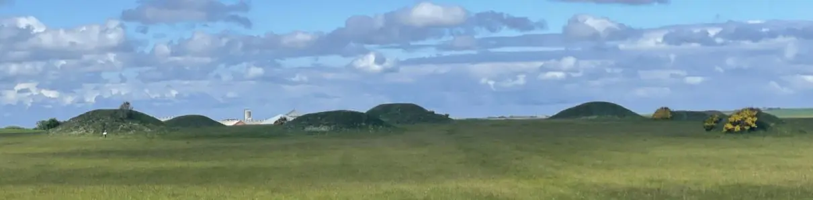
Dabei habe ich diese Fotografien gefertigt.
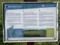 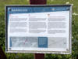 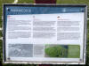 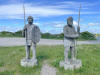 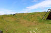 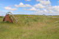 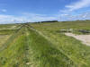


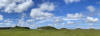 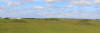 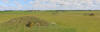 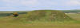 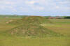 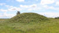 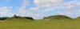


Fredninger i Danmark - Rammedige - Webseite "Denkmalschutz" mit Details / Erklärung zum Denkmalschutz von 1998
Ramme Dige - forsvarsvold og gravhøje (Ramme Dige - Verteidigungswälle und Grabhügel) - Webseite des Slots- og Kulturstyrelsen
Danske Fortidsminder - Rammedige
Der Beitrag aus "Historisk Atlas" zu Rammedige findet sich hier
Die Informationen aus der Datenbank "Fund og Fortidsminder" finden sich hier.
Die einzelnen Grabhügeln sind dort aber gesondert aufgeführt. Hotspots in diesem Kartenausschnitt / Screenshot führen zu den jeweiligen Verlinkungen auf Fund og Fortidsminder.
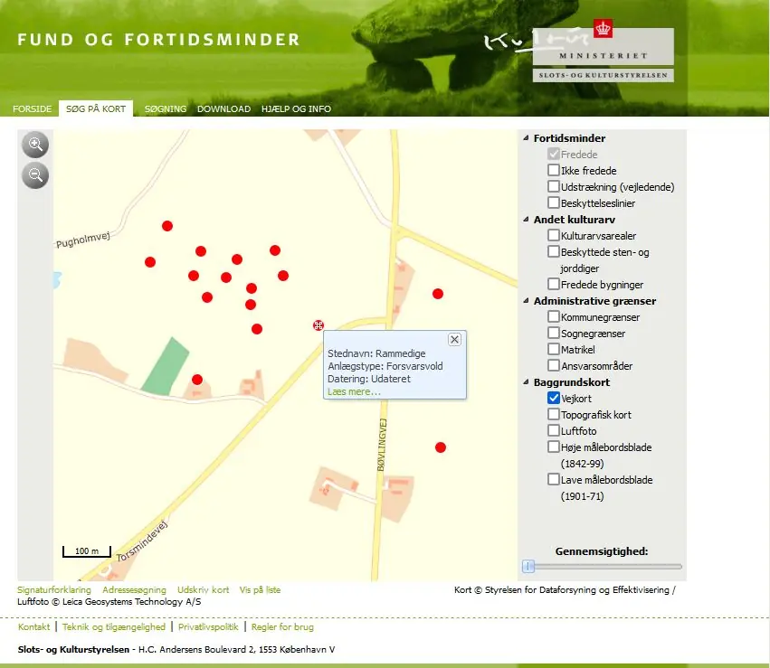
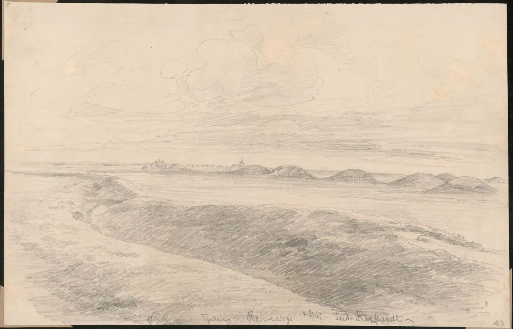
Quelle: Digitale Sammlungen Nationalmuseum Kopenhagen / Fjaltring sogn, Vandfuld herred, Ringkøbing amt - Bleistift - 22 x 35 cm - 1867 / Lizenz: Public Domain / der Künstler war
Joachim Ferdinand Richardt (*10.04.1819 - 29.10.1895 in Oakland/USA, Künstler - link-LIVES)
 Bildquelle:
Wikipedia
-
Lizenz:
Public Domain
Bildquelle:
Wikipedia
-
Lizenz:
Public Domain
In der Digitalen Bildersammlung des Nationalmuseums finden sich noch insgesamt sechs sw Fotografien aus den Jahren 1909 und 1929.
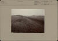 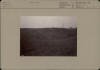 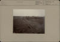 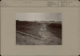 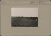 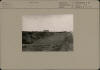


Etwa 6 km nordwestlich von Rammedige befindet sich die Steilküste zur Nordsee um den im Jahr 1877 gebauten und 26 m hohen Leuchtturm Bovbjerg Fyr - sicherlich einen Abstecher wert.
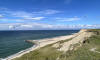 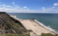 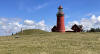


Hans Christian Andersen (*02.04.1805 - 04.08.1875 - link-LIVES - Begräbnisprotokoll) der bekannteste Dichter und Schriftsteller Dänemarks hat in seinem Tagebuch einen Eintrag zum 22.07.1859 aufgenommen, als er Rammedige einen Besuch abstattete:
"Nach dem Mittagessen um 12 Uhr fuhren wir am Kirchhof vorbei, wo es weder Büsche noch Bäume gab. Hinter dem Bauernhaus versteckten sich hier und da ein paar Bäume. Wir sahen die Kirche von Fabjerg und Høien, die beiden Schwestern, die christliche und die heidnische Reise. Die Bauern sähen Lupinen, gelb, um den Sandboden zu kultivieren. Nordnordwestlich von Rysensteen liegt Rammedige in Rammesogn, es ist eine Art Dannewerk, eine halbe Meile lang, hier gibt es unendlich viele riesige Hügel, und die Legende besagt, dass hier Prinz Hamlet eine Schlacht geliefert hat, hier wird er begraben liegen. Die Kirche von Gjellerup stammt aus dem Jahr 1140, hier einige aus dem Jahr 1000."
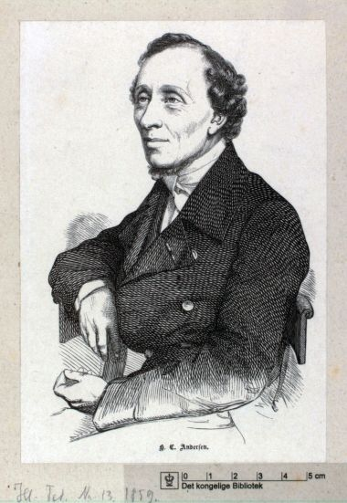
Quelle: Det kongelige Bibliotek - Lizenz: Public Domain
Er fertigte dabei auch diese Zeichnung an:
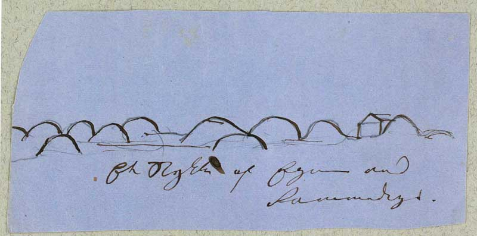
Quelle: https://www.hcandersen-homepage.dk/?page_id=32037 / Det kongelige Bibliotek - Lizenz: Public Domain
Literaturhinweise:
August F. Schmidt - Folkevolde i Jylland. En oversigt - Historie/Jyske Samlinger, 4, 1924, S. 436-453
Hardsyssels Aarbog udgivet af Historisk Samfund for Ringkøbing Amt, 50. Bind - Kjeld Galster: Da H. C. Andersen tog Jylland i besiddelse - S. 69 ff. (Rammedige S. 83-84)